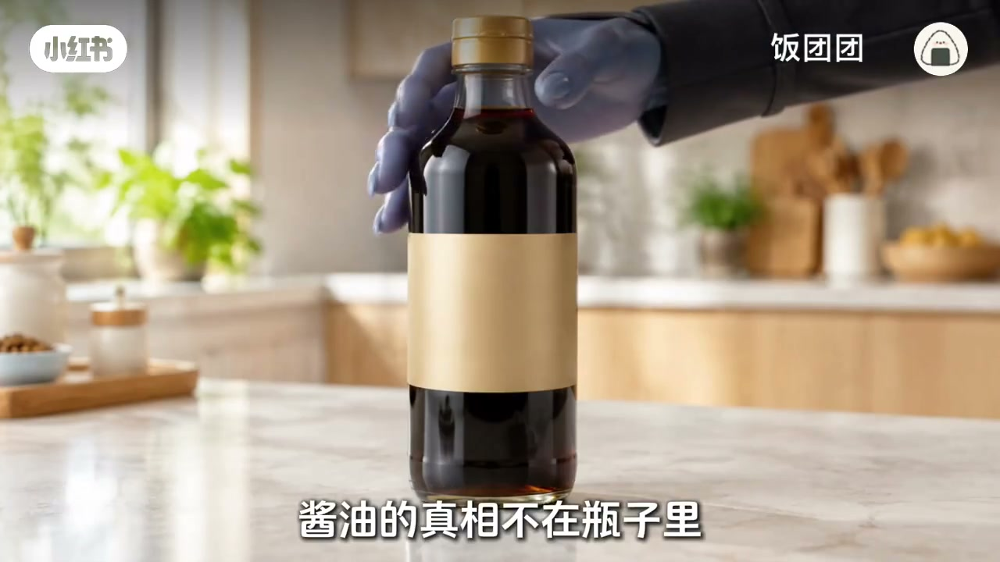
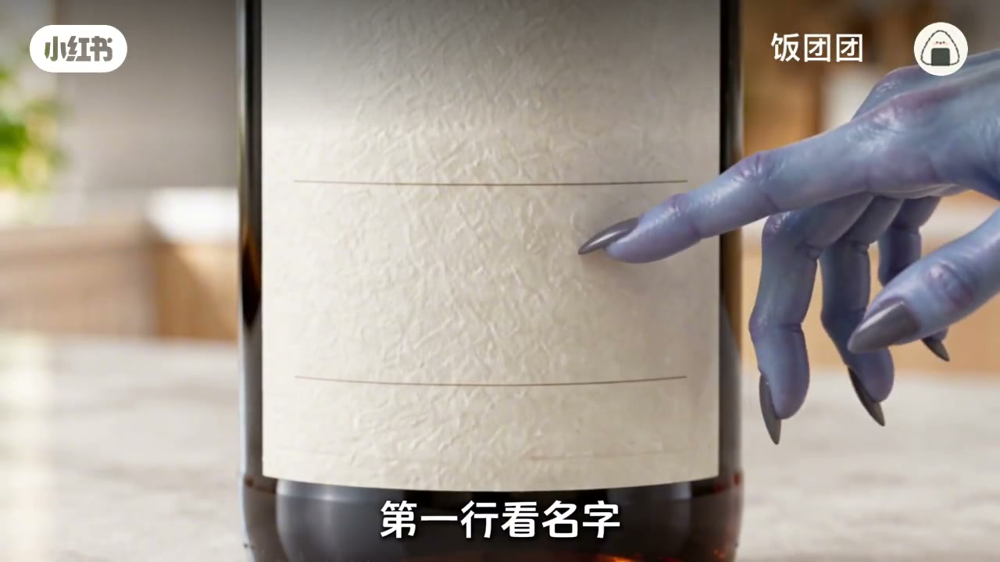
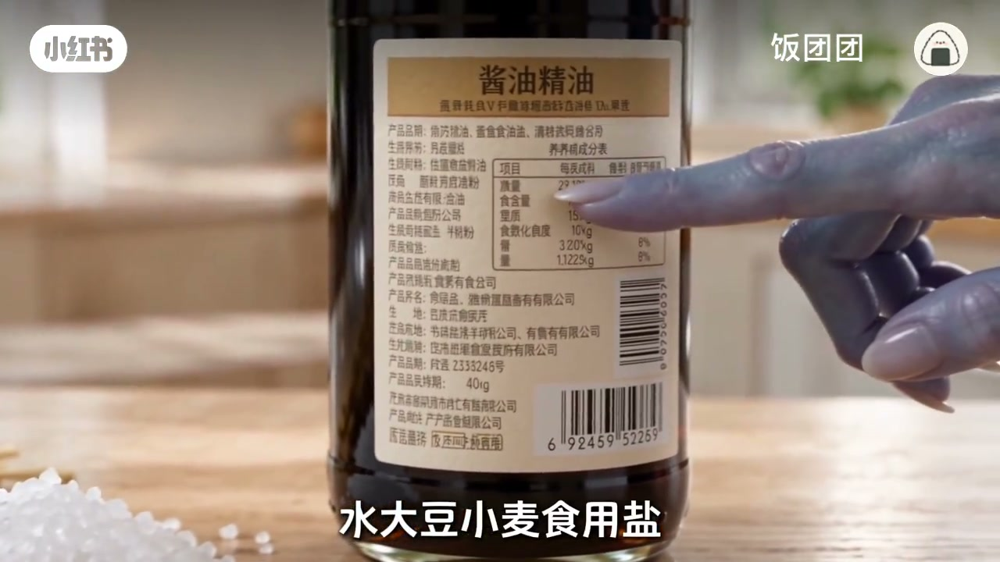
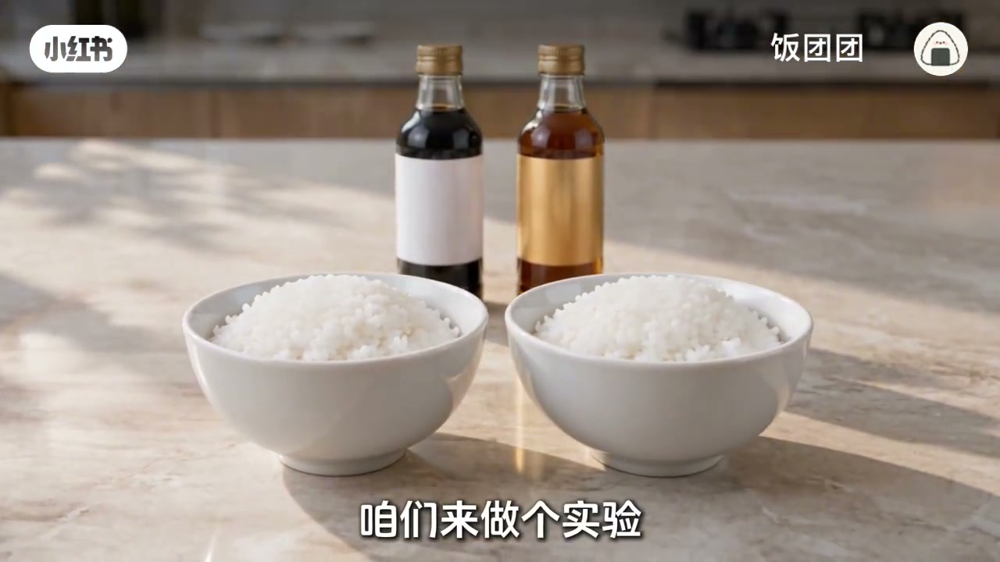
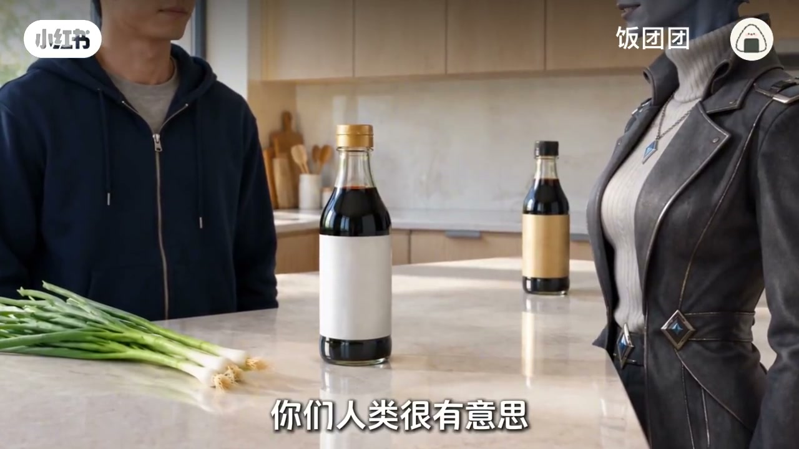

别只看颜色，真相在背面
便宜瓶和贵瓶倒出来都黑，视觉骗不了舌头。视频说酱油真相不在瓶身广告，而在你从不读的背面小字——那是「身份证」。

[00:10] 开场设问：同是黑乎乎，凭什么贵十倍——答案不在颜色，在背面
Opening: same dark color, 10× price—truth is on the back label, not the hue.

[00:22] 把瓶子转过来：背面三行字才是认酱油的入门
Flip the bottle: three back-label lines are the real ID check.
第一行：酿造还是配制
酿造：黄豆小麦加盐进缸，微生物慢慢把蛋白拆成鲜味。配制：部分酿造酱油兑水，再调鲜味液和色素，几天就能灌瓶。配制合法能吃，但鲜味一个是时间熬的，一个是调出来的——像炖汤对冲汤料包。
「一个鲜是时间熬出来的，一个鲜是调出来的」
[00:38] 第一行看品名：酿造靠发酵数月；配制可几天灌瓶，合法但机制不同
Line 1: brewed ferments for months; blended can bottle in days—legal, different.
第二行：氨基酸态氮
氨基酸态氮是鲜味分数。每 100 毫升 ≥0.8 克才配称特级；0.4、0.55 也能吃，只是同一勺鲜味底子更薄。
[01:25] 鲜味分数：≥0.8 g/100mL 才够特级门槛；低不等于不能吃
Amino nitrogen score: ≥0.8 g/100 mL for premium grade; lower still edible.
第三行：配料表与「0 添加」
好酿造通常很清爽：水、大豆、小麦、食用盐。后面拖一长串要多看一眼。「0 添加」多指没加防腐剂，不等于更鲜；开封后要冷藏，别在灶台边晒半年。

[02:00] 配料越靠前含量越高；清爽四件套往往比长名单更安心
Earlier ingredients dominate; a short clean list often beats a long add-on list.

[02:20] 0 添加≠更鲜；无防腐剂就别灶台暴晒——贵也可能被烤坏
Zero additives ≠ tastier; without preservatives, don’t bake it on the stove.
白米饭实验与用法分工
两碗白米饭各淋好/普通酱油，最诚实。但别把三十九全倒进红烧——大火一炒，发酵香气大半飞走，像把演唱会开在地铁站。贵的留给拌、蘸、淋；炒菜红烧用普通的，物尽其用。
[02:45] 白米饭不给面子：一碗好酱油、一碗普通，拌一口就懂
Plain rice is honest: good vs ordinary soy—one bite tells.

[03:20] 好酱油干拌蘸淋；红烧炒菜用普通——不是越贵越好，是用对地方
Save premium for dip/drizzle; use ordinary for stir-fry—right place beats price.
小结
认三行 + 分场景用：背面读懂身份，贵在冷吃，炒用平价。